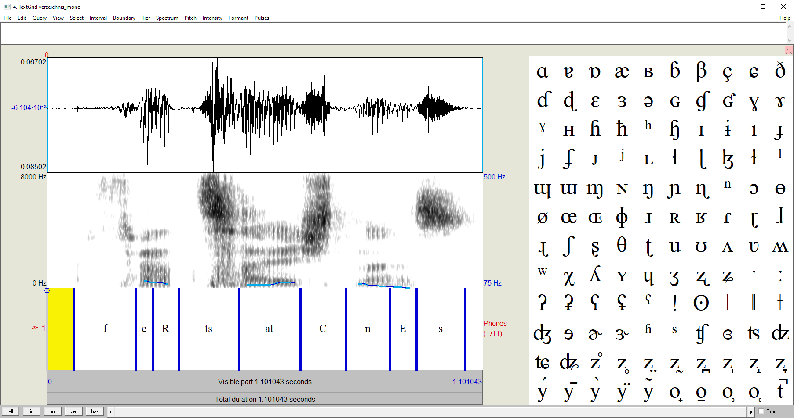
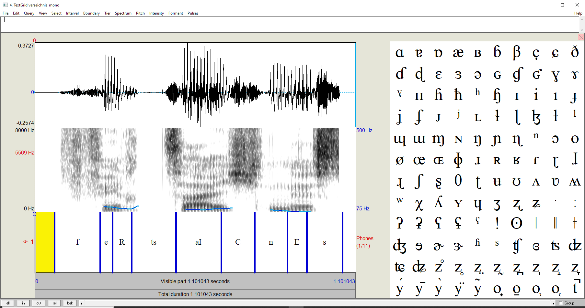
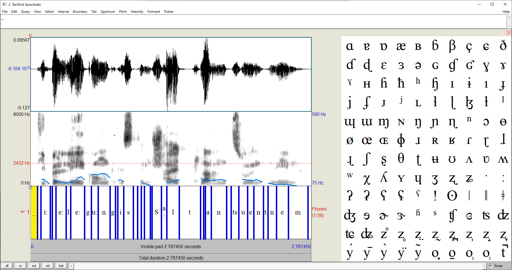
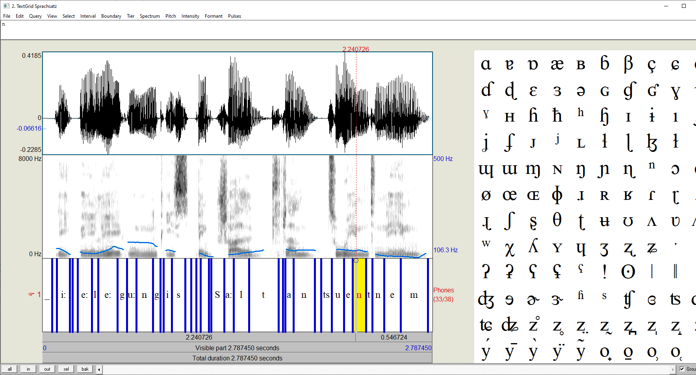

Beschreibung
Mit dem Headset und PRAAT soll von jedem Gruppenmitglied ein anderes dreisilbiges Wort
aufgezeichnet werden. Anschließend soll die phonetische Transkription erfolgen. Zu diesem Zweck wird eine Transkriptionstabelle angelegt und die Laute mit MBROLA synthetisiert. Die dabei entstehenden Wellenformen werden miteinander verglichen um die Qualität zu ermitteln.
Lösung
Einzelwort: "Verzeichnis"
Ansicht Praat - Wort
Download Wort.wav
Download Wort.Textgrid
Transkriptionstabelle
Sampa Anfang [s] Ende [s] Dauer [s] Grundfrequenz F0 [Hz] f 0.067 0.224 0.157 - e: 0.224 0.266 0.042 100 R 0.266 0.332 0.066 90 ts 0.332 0.484 0.152 - aI 0.484 0.640 0.156 85 C 0.640 0.754 0.114 - n 0.754 0.866 0.112 88 E 0.866 0.933 0.067 78 s 0.933 1.055 0.122 -
Mbroli Skript
_ 67 f 157 e: 42 50 100 100 95 R 66 50 92 60 89 ts 152 aI 156 10 85 C 114 n 112 15 88 E 67 0 78 75 75 s 112 _46
Download Synthese.pho
Download Synthese.wav
Ansicht Praat - Synthese
Zusammenfassung
Im Vergleich von Aufnahme und Synthese zeigen sich deutliche Ähnlichkeiten. Die synthetisierten Phoneme sind sichtlich erkennbar und entsprechen annähernd der Transkription.
Die Synthese weist meist eine größere Amplitude und wesentlich mehr hohe Frequenzanteile auf. Beim Affrikat 'ts' und dem Frikativ 'C' zeigt sich hingegen das eine Verringerung der Amplitude.
Die synthetisierten Lauten sind dabei sehr deutlich zu verstehen. Dagegen enthält die Aufnahme mehr Rauschen und wurde zu leise eingesprochen, wodurch sich dieses Verhalten, bei genannten Phonemen, erklären liese.
Der größte Unterschied ist im Bereich der Frikative 'f' und 's' zu erkennen. Hier sind in der Synthese wesentlich mehr hohe Frequenzanteile enthalten.
Im wesentlichem ist die Grundfrequenz Synthesestimme höher, als die der Aufnahme, und da für alle genannten Phoneme, mit deutlichen Abweichungen, keine Frequenz angegeben wurde, zeigen sich hier wesentliche Unterschiede. Die Synthesequalität könnte folglich durch Nachjustierung der Frequenzen verbessert werden. Die ermittelten Grundfrequenzen scheinen dabei ein relativ gutes Ergebnis zu liefern.
Beschreibung
Als nächstes sprich einen kurzen Satz und verfahre genau wie beim Einzelwort. Vergleiche die Sprachqualität von Einzelwort und Satz
Lösung
Satz: "Die Belegung ist dem Schaltplan zu entnehmen"
Ansicht Praat - Satz
Download Satz.wav
Download Satz.Textgrid
Transkriptionstabelle
Sampa Anfang [s] Ende [s] Dauer [s] Grundfrequenz F0 [Hz] d 0.0705 0.1043 0.0338 - i: 0.1043 0.1961 0.0918 102 _ 0.1961 0.2158 0.0200 - b 0.2158 0.2536 0.0377 106 e: 0.2536 0.3541 0.1005 96 l 0.3541 0.3992 0.0451 94 e: 0.3992 0.5376 0.1384 99 g 0.5376 0.6031 0.0655 - u: 0.6031 0.6727 0.0696 140 n 0.6727 0.7888 0.1161 140 g 0.7888 0.8439 0.0551 - _ 0.8439 0.8660 0.0221 - i 0.8660 0.9238 0.0578 106 s 0.9238 1.0210 0.0972 - _ 1.0210 1.0630 0.0420 - d 1.0630 1.0980 0.0350 - e 1.0980 1.1294 0.0315 90 m 1.1294 1.1883 0.0590 88 _ 1.1883 1.2044 0.0161 - S 1.2044 1.2996 0.0952 - a: 1.2996 1.3654 0.0659 - l 1.3654 1.4753 0.1098 102 t 1.4753 1.6867 0.2114 - p 1.6867 1.7172 0.0305 113 l 1.7172 1.7346 0.0174 110 a: 1.7346 1.7922 0.0575 105 n 1.7922 1.9442 0.1521 108 _ 1.9442 1.9911 0.0469 - ts 1.9911 2.0676 0.0765 - u 2.0676 2.1530 0.0854 111 e 2.1530 2.2166 0.0636 106 n 2.2166 2.3121 0.0955 104 t 2.3121 2.3550 0.0429 91 n 2.3550 2.4412 0.0862 85 e 2.4412 2.5577 0.1165 84 m 2.5577 2.7518 0.1941 78
Mbroli Skript
_ 70 d 33 i: 91 0 115 50 102 80 87 _ 30 b 38 0 105 e: 100 0 96 l 45 0 94 e: 138 0 99 50 115 60 125 100 113 g 60 u: 75 0 140 n 116 0 140 80 137 100 122 g 55 _ 22 i: 58 0 106 20 109 60 105 100 100 s 97 _ 42 d 35 e: 31 50 94 100 90 m 59 0 88 50 83 85 80 _ 16 S 95 a: 66 l 101 t 211 p 31 10 117 50 110 l 17 0 113 a: 57 0 105 n 152 0 108 _ 47 ts 77 u: 85 40 111 e: 64 0 108 50 106 n 96 0 106 15 110 t 43 n 86 0 91 50 86 100 83 e: 117 0 84 m 195 0 82 50 77 _ 36
Download Synthese.pho
Download Synthese.wav
Ansicht Praat - Synthese
Zusammenfassung
Zwischen der Aufnahme und Synthese zeigen sich deutliche Gemeinsamkeiten und Unterschiede.
Die synthetisierten Laute sind dabei wieder klar erkennbar. Das Frequenzspektrum weist erneut wesentliche Unterschiede auf. Es fiel dabei nicht immer leicht den Laut möglichst genau zu erfassen.
Bei der Sprachqualität zeigt sich, dass bei längeren Sätzen mit Pausen ein ähnliches Resultat erzielt werden kann. Markante Unsauberkeiten entstehen vorallem bei 'verwischten' Lauten. Artikel der deutschen Sprache z.B. weisen oft solche 'verwischte' Anteile auf. Beim Wort 'die', bzw. 'dem' wird der Laut für 'e' so kurz, dass dieser nur schwer deutlich abtrennbar ist.